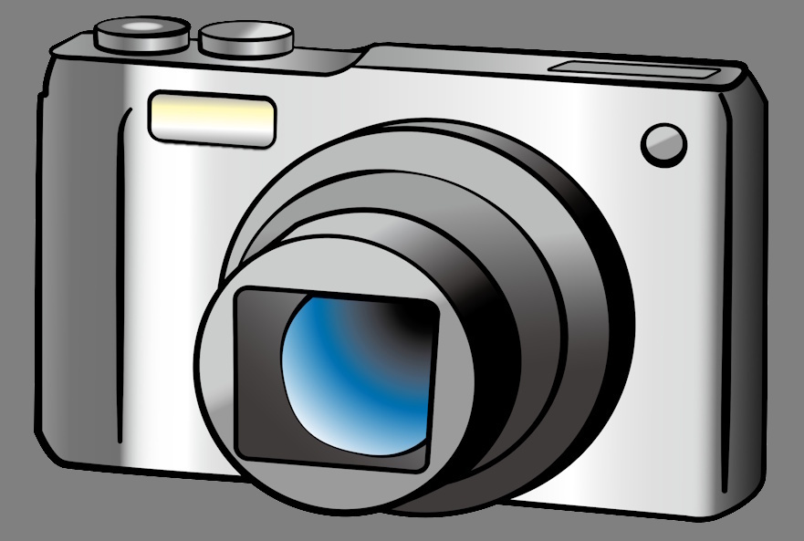
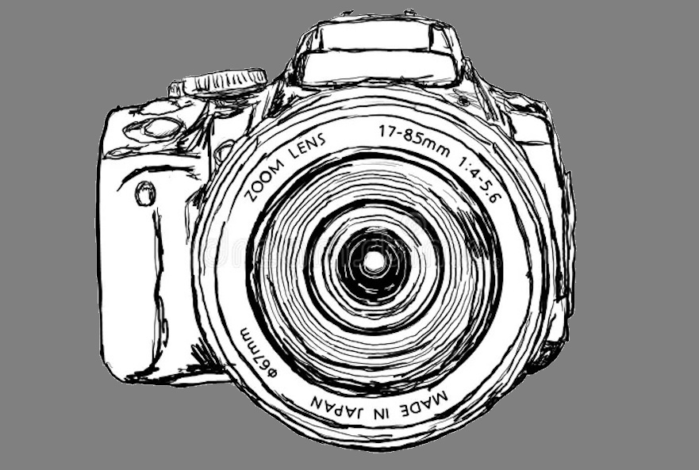

Point and Shoot
Compact, easy to use, and great for everyday photography.
Digital Single-Lens Reflex (DSLR)
Versatile cameras with interchangeable lenses, favored by professionals.

Photography cameras come in various types, each designed for different skill levels, preferences, and shooting conditions. Whether you're a beginner looking for a simple way to capture memories or a professional seeking complete creative control, the right camera can make all the difference. Photography has evolved significantly, with different cameras catering to various skill levels and needs. This website provides a quick look at four main types of cameras for photographers: Point and Shoot, Bridge, DSLR, and Mirrorless. Each has unique features suited for different users, from beginners to professionals.
Compact, easy to use, and great for everyday photography.
Versatile cameras with interchangeable lenses, favored by professionals.